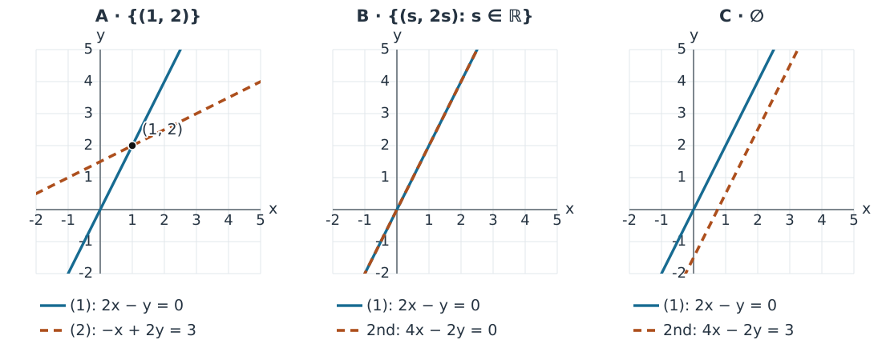
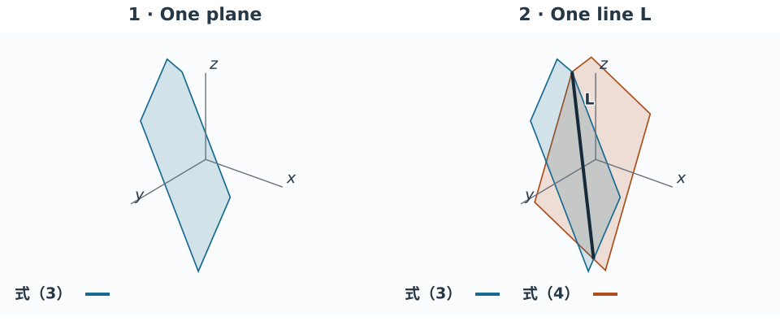
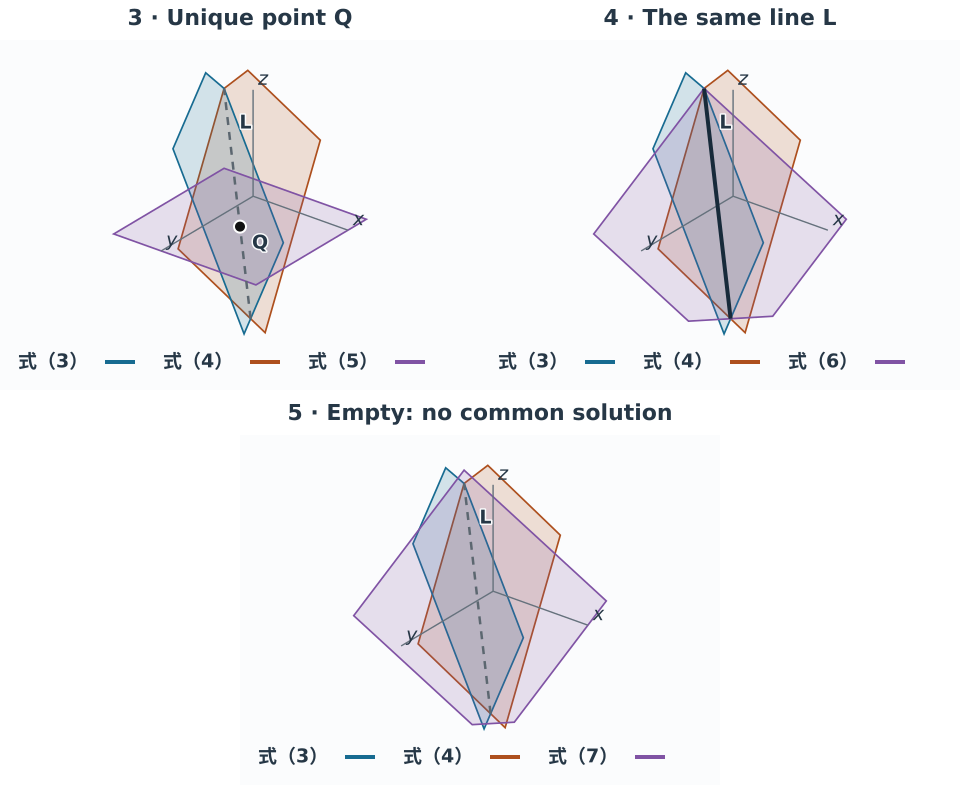

线性方程组的行图像
The Row Picture of Linear Systems
共同解在哪里？消元为什么能换方程，却不换全部解？ 这里先看二维，再理解消元对共同交集的影响，最后推广到更多未知数。需要的基础可回查线性方程组与矩阵表示及高斯消元法；熟悉基础者可直接从本页开始。 本页在实数范围内讨论；先按方程检验，再用图形理解共同解。
两条直线的共同交点 The Common Intersection of Two Lines
一个方程先确定一批满足它的点，整个方程组再要求这些点同时满足其他方程。 表示由 个实数坐标组成的点或向量的集合；本节两个未知数对应平面 。考虑贯穿本页的例子，两个方程编号如下：
式（1） 与 式（2）：
先动笔。 求出 ，再分别代入原来的两个方程检验，最后对照图形。
这说明任何解都只能是 。还要检查这个候选点确实满足两个方程：
两式都成立，因此解存在，而且唯一；解集是 。
图中 式（1） 对应直线（line），式（2） 对应直线（line）。在第一条线上，只能保证第一个方程成立；在第二条线上，只能保证第二个方程成立。必须同时在两条线上，才是整个方程组的解。例如原点 在 式（1） 上，却不满足 式（2）。
这就是行图像（row picture）：把每个方程的解集画在同一个未知数空间里，再取它们的交集（intersection），也就是它们共有的点。图形帮助理解；上面的计算与代入检查则给出了精确结论。
存在性与唯一性 Existence and Uniqueness
保留 式（1）：，只改变第二个方程。三个例子都有两个方程、两个未知数，结果却不同。先写出每种情况的代数依据，再用图形观察交集。

A：唯一解（unique solution）。 第二个方程是 。刚才已经算出，两条直线只在 相交。
B：无穷多解（infinitely many solutions）。 第二个方程是 ，恰好是第一个方程的两倍；它重复了同一约束（constraint）。代入 得 ，恒成立。任取实数 ，点 都同时满足两个方程。因此解集（solution set）是整条直线 ，可写为
C：无解（no solution）。 第二个方程是 ，即 。它与 平行且不同。从代数看，第一个方程要求 ，第二个却要求同一式子等于 ，两式相减得到 ，不可能同时成立。
有至少一个解的方程组称为相容的方程组（consistent system）；没有解的称为不相容的方程组（inconsistent system）。A 与 B 都相容，C 不相容。
两个问题应分开问：
- 存在性（existence）：有没有解？
- 唯一性（uniqueness）：如果有解，是不是只有一个？
知道方程和未知数的数目，还不知道约束之间是提供新信息、重复信息，还是彼此冲突，所以不能仅凭数目判断存在性或唯一性。一个相容的方程组也未必有唯一解。
回看消元的三个状态 Three Stages of Elimination
按 记录系数与各方程右边的常数，仍从原两式出发。完整算法与中间步骤见高斯消元主题。这里保留看图所需的状态。
表示第 行，整行含常数列一起操作。第二条斜线变为 ，即水平线 ；与第一条线的交点仍为 。 是行阶梯形（row echelon form，REF）。继续向后做 、、，得到
是简化行阶梯形（reduced row echelon form，RREF），两条线分别为 与 。 原始、REF、RREF的单条直线可能不同，共同交点相同；接下来解释这种保持为何必然成立。
三种初等行变换及其逆操作 Three Elementary Row Operations and Their Reversals
把方程的系数按固定未知数顺序排在一起，得到系数矩阵（coefficient matrix） ；再加上常数列 ，得到增广矩阵（augmented matrix） 。行操作必须作用于完整的一行，包括常数列。
设 为第 行，。三种初等行变换（elementary row operations）如下。
| 行变换 | 逆操作 | 为什么条件不可省 |
|---|---|---|
| 交换 | 再交换一次 | 只改变方程次序 |
| ， | 乘零会丢掉原行，无法这样恢复 | |
| 保留；两行不同； 可为任意实数 |
因为每一步可以恢复，有限步操作也可以按相反次序逐一撤销。能够通过这些操作相互得到的矩阵称为行等价的（row equivalent）；对应方程组具有相同的解集（solution set）。行等价不表示矩阵每个元素相同，也不保证长度、夹角等几何量不变。
几何上，交换只是重排方程；乘非零数不改变该方程的点集；加另一行的倍数可能改变单个方程的点集。每种操作都保留共同解集，空解集也同样保持。下面用正逆替换具体说明两个方向。
等价方程组：改变直线，保留交集 Equivalent Systems: Changing Lines, Keeping the Intersection
在同一个未知数空间中，若两个方程组的解集（solution set）完全相同，就称它们为等价方程组（equivalent systems）。关键是保留全部解，而不只是保留碰巧找到的一个解。
这里重新从原始方程组出发，选择另一条合法路径，不接在上节的计算之后。前一路径先出现水平约束，这次先出现竖直约束，便于比较同一交点怎样由不同直线描述。 保留 式（1），把 式（2） 替换成“原来的 式（2） 加两倍的 式（1）”。把方程的系数与各方程右边的常数排成行，以 表示第 行。这次操作记作
行操作同时替换第二式的左右两边：
这里“消去 项”是让它的系数变为零，不是把未知数 设为零；解中仍有 。
所以得到新方程组
第二条直线确实改变了。例如 在原来的 式（2） 上，却不在新的 上。但我们比较的是两条线的共同交集，不是单独第二条线。
核心推理：为何解集完全相同？ Why Are the Solution Sets Identical?
正向。 任何满足原来两个方程的 ，仍满足保留的 式（1），也满足两个真等式相加得到的 。所以原来的每个解都是新方程组的解。
反向。 任何满足新方程组的 ，都满足 与 。从新第二式减去两倍第一式，就恢复
也就是可以实施逆替换 ，其中 此时是新第二行。因此新方程组的每个解也是原来的解。两个方向合起来，才证明整个解集不变。这一理由不依赖事先知道 。
高维思考：超平面不必靠想象来理解 Higher Dimensions: Reasoning about Hyperplanes
先动笔。 在 中自选前三个坐标，求第四个并代入检验。再看一般情形。
设 ，考虑 个实未知数的一个方程：
先任意选取前 个坐标，再把最后一个取为
这样一定得到一个解；而每一个解的最后一个坐标也都必须由这个公式决定。譬如在四个未知数时，选 ，便必须取 ，于是 。
| 未知数（unknowns）的数目 | 候选点所在空间 | 这个方程的解集（solution set） |
|---|---|---|
| 直线（line），可任取一个坐标 | ||
| 平面（plane），可任取两个坐标 | ||
| 三维的平坦集合，可任取三个坐标 | ||
| 维超平面（hyperplane） |
这里用“可以独立指定多少个实数”来初步理解维数（dimension）。四维空间中的三维集合并不是我们眼前整个三维空间；它是在四个坐标组成的空间里受到一个方程限制的集合。即使不能直接画出，也能准确构造和检验其中的点。
非零系数为何必要？ Why Must a Coefficient Be Nonzero?
一般的线性方程（linear equation）
如果至少有一个系数非零，例如 ，就可以任取其余 个坐标，再令
因此它的解集是 中的一个 维超平面（hyperplane）。当 时，分别就是直线（line）和平面（plane）。
若所有系数都是零，便有两种例外： 对任何点都成立，解集是整个 ； 且 对任何点都不成立，解集为空集（empty set）。它们都不是这里所说的 维超平面。
还要分清两个数： 个未知数决定候选点所在的空间 ； 个方程列出了 个约束（constraints）。后加入的方程可能重复信息，也可能与已有约束冲突。不能把“列了 个方程”直接理解为“必定减少 个可自由选择的数”。
相容时，消元后每个主元对应一个独立约束，其余变量可以自由选择。若系数矩阵有 个主元，就有 个自由参数； 这里用自由参数的数目理解自由度（degrees of freedom）。 不一定等于方程数 ，且不相容时不能这样描述解集。正式秩理论留后续。
回访主例：三个方程、五个未知数 Revisiting Three Equations with Five Unknowns
回看完整消元的原始、REF、RREF三个状态，比较条件与交集。未知数顺序为 ，末列是常数列：
每一行都是 中一个超平面的方程。先交换 ，再做 、，得到
动笔： 读第三行为 ；它不是零行，也不是 。主元在系数部分第1、2、5列，没有矛盾行。 向后消去第五列上方元素、归一化并清第二列上方，得到
全部解与几何回顾 All Solutions and Their Geometry
令 ，从 得到全部解： 任取 都满足化简后的方程；每个解也都取 而写成此形式。双向保解保证这正是原三式的全部解。 动笔回代： 取 ，代回 对应的三式；答案及任意参数的恒等式检查仍须完成。
三个状态可能用不同的超平面表达条件，但共同交集是同一个 中的集合。三个主元留下两个可独立选择的参数， 所以这里的交集可用两个实数描述；不是因为有三个方程就直接减去三维，而是因为相容且确有三个主元。 下一主题将把这些解写成五分量向量，并区别于三个分量的矩阵列。
概念与关键条件 Concepts and Key Conditions
| 查阅项 | 条件与理由 |
|---|---|
| 行图像 / row picture | 未知数空间为 ，求共同交集 |
| 超平面 / hyperplane | 至少一个非零系数；零系数方程给全空间或空集 |
| 等价 / equivalence | 两个方向都成立，空解集也保留 |
| 阶梯形、主元、自由变量 | 完整算法条件与几何回顾，先判断相容 |
| 自由度 / degrees of freedom | 相容后数自由变量，不直接用 |
练习与反馈：保留条件还是丢失条件？ Practice: Keeping or Losing Conditions
先独立完成主例的后续操作、任选参数回代，再完成下面的判断与计算。
两个检验理解的任务 Two Tasks to Check Understanding
任务 A：增加约束 Task A: Adding a Constraint
从原方程组出发，分别增加第三个方程：
- A1：；
- A2：。
各自的解集（solution set）是什么？请说明理由，而不只说“方程变多了”。
提示（hint）
增加方程以后，候选点仍必须先满足原来的两个方程。原解集中有哪些点可以保留？
反馈与解释（feedback and explanation）
原方程组的解集只有 。A1 中 ，所以这个解保留，解集不变。A2 中 ，唯一的候选点被排除，解集变成 ，即不相容的方程组（inconsistent system）。
增加约束只能从原解集中筛选，不能产生原先没有的解。重复已有信息可以不改变解集；与原有约束冲突则可能排除所有解。
任务 B：只保留和式，还是等价方程组吗？ Task B: Does Keeping Only the Sum Preserve Equivalence?
原来的两式相加得到 。如果把原来的两个方程都丢掉，只保留 ，是否仍然等价？
提示（hint）
找一个满足 ，却不满足原方程组的点。只要找到一个，就能判断两个解集是否相同。
反馈与解释（feedback and explanation）
不等价。点 满足 ，却使原来的第一式左边等于 ，第二式左边等于 ，均不满足要求。只保留和式后，解集是整条直线，而原解集只有一个点。
原方程组的解一定满足和式，反过来却不成立。只留下和式，已经丢失了把这条线上的其他点排除掉的信息。上一节的替换之所以可逆，是因为我们同时保留了第一式，可以利用它恢复第二式。
任务 A 是在原有约束上继续筛选；任务 B 则删去约束，只留下它们的一个结果。两种操作都能写出新方程，但解集怎样变化，必须另作判断。
计算巩固 Calculation Practice
求方程组 的全部解，再判断增加 后的相容性。完成高斯消元：独立巩固中的计算并核对答案。
不同消元路径 Different Elimination Paths
在高斯消元：不同路径中比较两条合法操作路径，观察不同阶梯形怎样得到相同RREF，并完成相应练习。请先自己计算，再核对两条路径。
可选探索：三维中的平面 Optional Exploration: Planes in Three Dimensions
这是另一个独立三维示意例，不是上面的五未知数主例；供在线选读，静态图和公式给出全部结论。先考虑
式（3） 与 式（4）：
每个方程都在 中给出一个平面（plane）。令 ，由第一式得 ，代入第二式得 ，所以
任意实数 都使两个方程成立；反过来，任何解都可取 而写成上述形式。所以 是前两个平面的整个交集（intersection），是一条直线（line）。例如 给出 ， 给出 。
单独打开交互视图（open interactive view）。用鼠标或触屏拖动旋转，也可用方向键或视角按钮。下方静态图与文字完整保留各阶段结论。
图中 式（3） 的平面 用蓝色、式（4） 的平面 用橙色，第三个平面用紫色，并各有文字标记。粗实线 表示直线解集（solution line）；黑点 表示唯一解（unique solution）。灰色虚线 仅供对照，表示前两个平面的交线，不表示全部方程的解。绘出的有限面片只代表无限平面（infinite planes）的一部分，截短的线段也代表无限直线（infinite line）。

可选探索：增加第三个平面 Optional Exploration: Adding a Third Plane
现在逐次回到 式（3）、式（4），分别加入不同的第三个方程。只需检查交线 上哪些点满足新约束（constraint）。
阶段 3：加入式（5）。
式（5）
在 上 ，于是 ，只留下点 。三个平面的共同解集（solution set）是 。此时灰色虚线上的其他点仅满足前两个方程。
阶段 4：加入式（6）。
式（6）
在 上，
对所有 都成立。这个方程正好是前两式之和，所以它的平面包含整条 ，共同解集仍是 。
阶段 5：加入式（7）。
式（7）
前两式之和要求 ，而新方程要求它等于 。因此没有共同解（no common solution）。灰色虚线 上没有任何点满足第三式；不能把它看作全部三个方程的解集。

这里同样不能用“三个方程、三个未知数”就断言存在唯一解（unique solution）。需要看新方程对原解集提出了什么要求。旋转图形只改变观察角度；它不改变方程或解集。图形中投影后看似相交的位置，也不一定是三维中共同的点，应以方程检验为准。
刚才逐个方程观察约束，下一步改为按每个未知数收集它在各方程中的系数。这样得到的列向量，怎样用同一组未知数取值组合出方程等号右边的常数？
上一主题：高斯消元法 / Previous: Gaussian Elimination · 下一主题：线性方程组的列图像 / Next: The Column Picture of Linear Systems